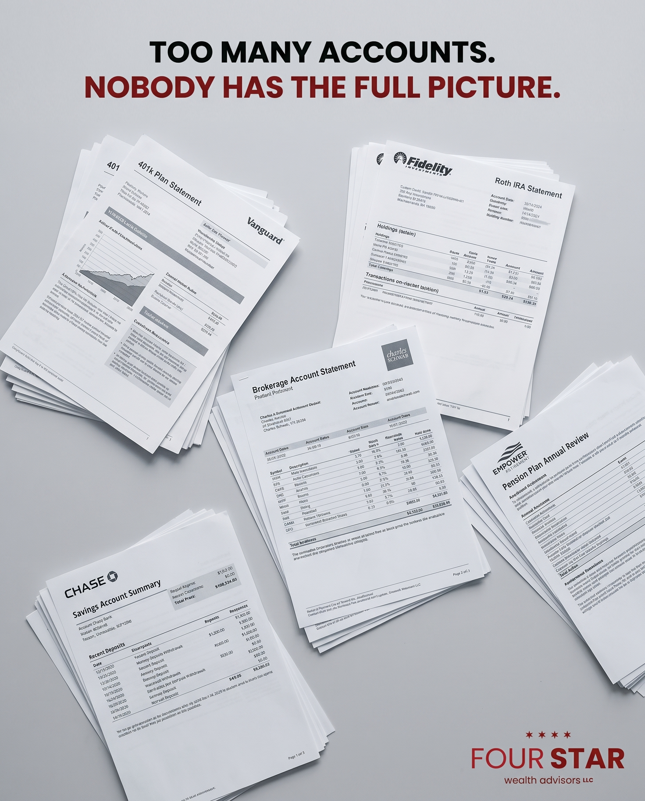
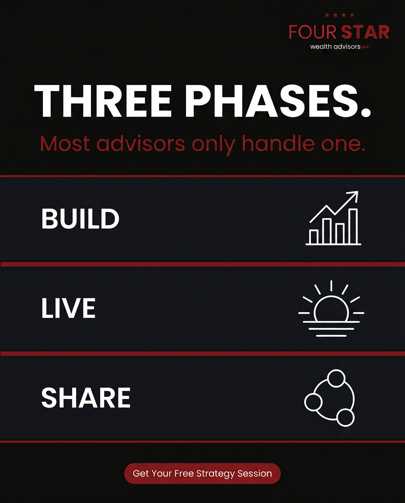
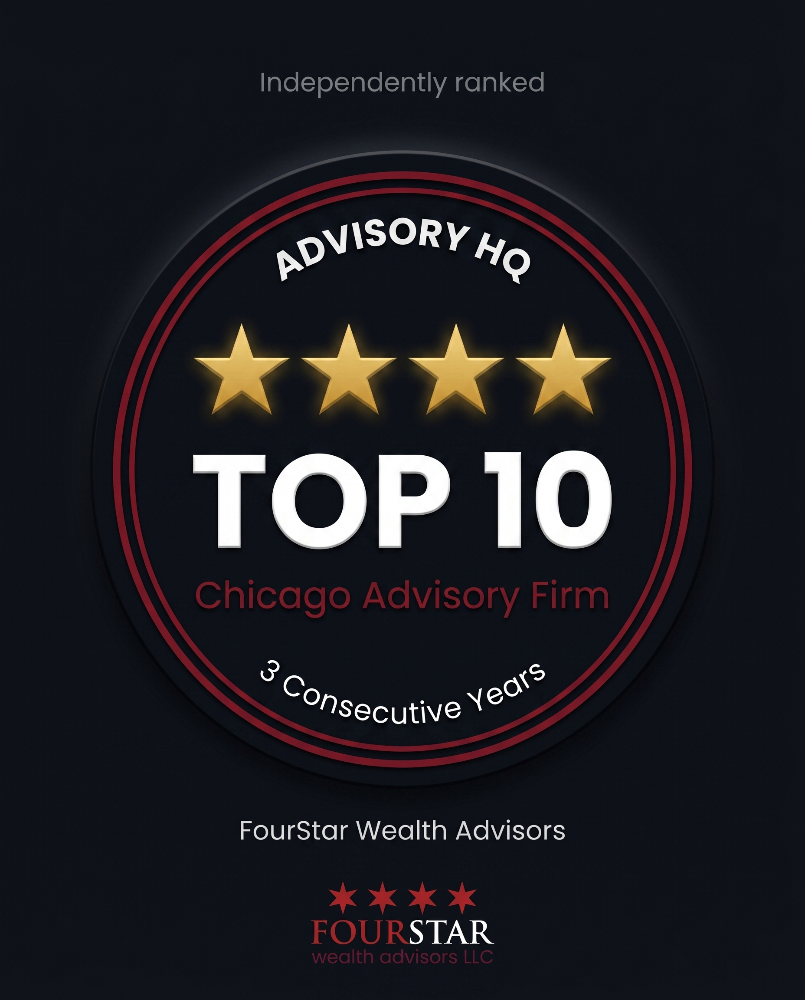
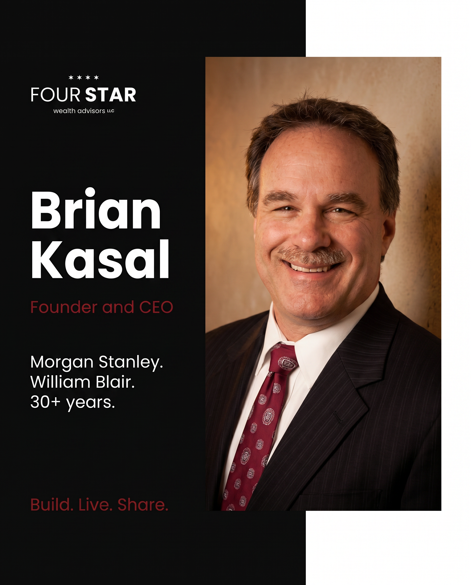
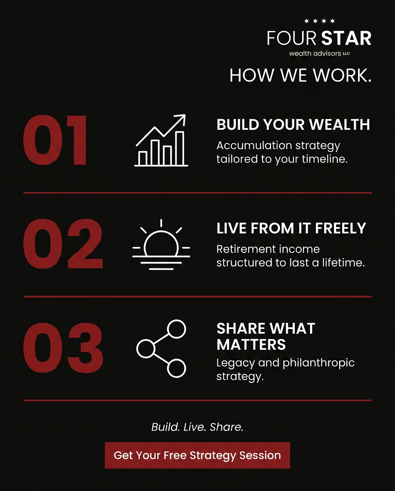
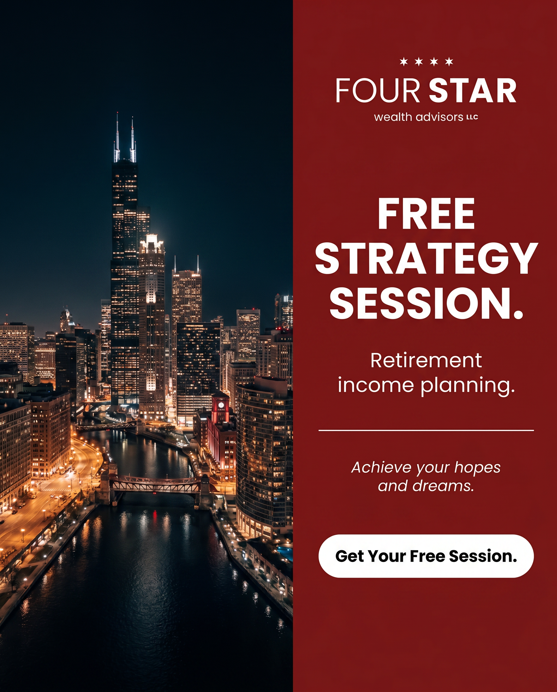
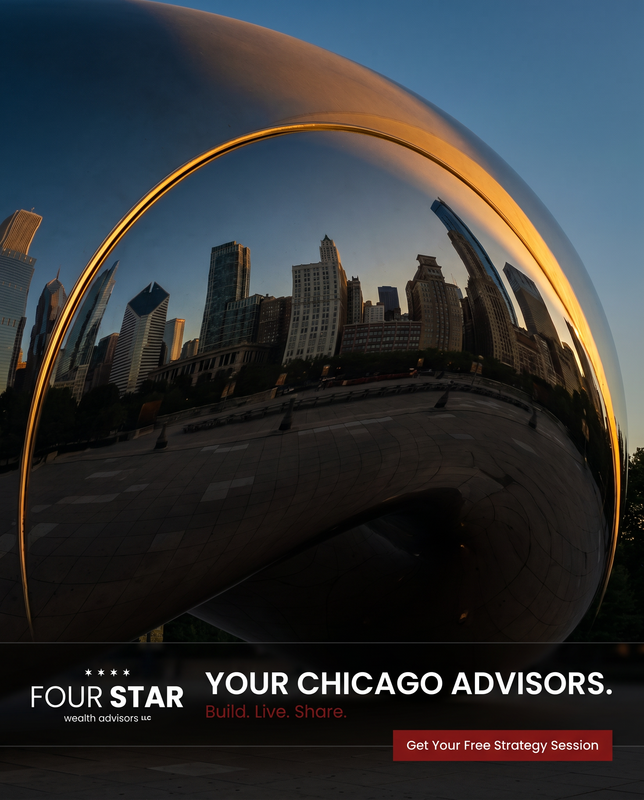

Three phases. Nine ads. One consistent funnel.
Each ad is written for Higgsfield Nano Banana Pro. The set runs cold-to-warm: prospecting ads create awareness, trust ads build credibility, and conversion ads drive free strategy session applications.

Pain/Problem
Overhead flat-lay of five scattered financial account statements from different institutions on a gray surface. Cold, desaturated lighting. Overlay copy: TOO MANY ACCOUNTS. / NOBODY HAS THE FULL PICTURE. Speaks directly to the #1 pain pre-retirees report.

Education/Tip
Dark typographic ad with three stacked horizontal bands: BUILD (chart icon), LIVE (sun icon), SHARE (network icon). Headline: THREE PHASES. Subtext: Most advisors only handle one. Positions FourStar as the authority who thinks beyond accumulation.

Before/After
Split-screen: left side shows five overlapping disconnected account circles in cold gray, desaturated. Right side shows three clean coordinated circles, Build, Live, Share, in FourStar burgundy and white. Visual contrast shows the transformation without a word.

Owner/Team
Brian Kasal direct-to-camera, dark charcoal suit, warm smile, brick-wall Chicago background. Left panel with credentials: Morgan Stanley. William Blair. 30+ years. Below: Build. Live. Share. in burgundy. His story of leaving institutional finance to build something better is the credibility.

Social Proof
Dark background with centered award seal: four gold stars, TOP 10 in large white bold text, Chicago Advisory Firm in burgundy, 3 Consecutive Years below. Advisory HQ at the top of the seal. The only verifiable ranking in the Chicago wealth management space.

FAQ/Myth-Bust
Dark background, two-line typographic layout. Top line: BIG BANK = BETTER RESULTS in muted gray with a thick burgundy strike-through. Bottom line: INDEPENDENT. / NO PRODUCT PRESSURE. in white and burgundy. Addresses the #1 objection of pre-retirees who already have an advisor.

Process
Dark background with three horizontal process rows separated by thin burgundy rules. Row 1: 01 / chart icon / BUILD YOUR WEALTH. Row 2: 02 / sun icon / LIVE FROM IT FREELY. Row 3: 03 / network icon / SHARE WHAT MATTERS. Headline: HOW WE WORK. Bottom: Build. Live. Share.

Free Offer
Left 55%: nighttime Chicago cityscape, deep blue-black sky, city lights reflected in the river. Right 45%: solid burgundy panel with FREE STRATEGY SESSION as headline, Retirement income planning as subtitle, Achieve your hopes and dreams in italic, and white CTA button: Get Your Free Session.

Lead/Hero
Low-angle close-up of the Chicago Cloud Gate sculpture at dusk. Polished mirrored surface reflecting the downtown skyline in warm gold and deep blue. No people, no crowds. Bottom strip with FourStar logo left and YOUR CHICAGO ADVISORS right. CTA button: Get Your Free Strategy Session. Premium, aspirational, uniquely Chicago.